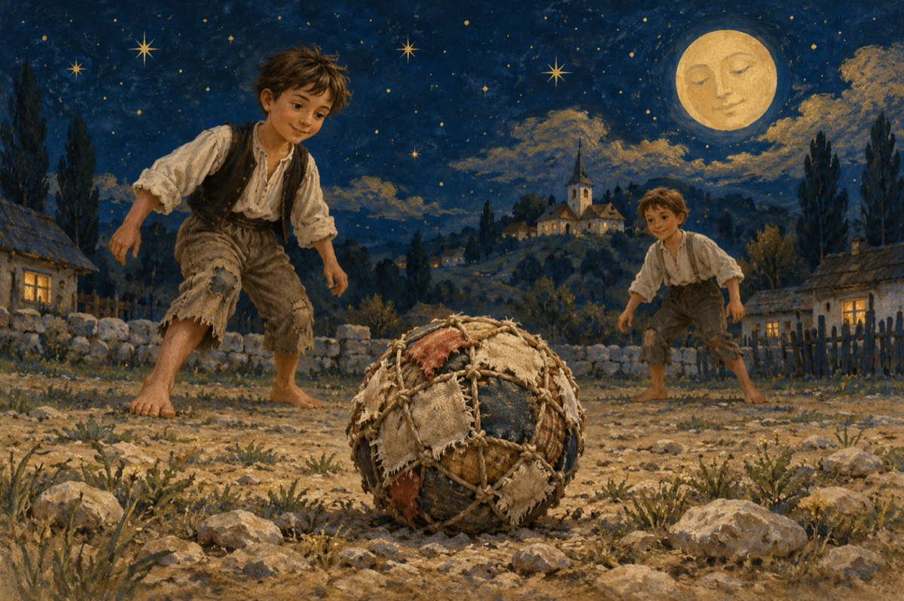

Când eram copil
Când eram copil la țară
Să vă zic eu cum era.
Nu cum e pe vremea voastră,
Altfel știam a ne juca!
Jucam fotbal pe oriunde
Pe drum, curte sau islaz,
Cu mingea toată din cârpe
Mai cu plânset, mai cu haz!
Era-mpletită cu ață
Cum e plasa la pescar
Dacă te lovea în față
Nechezai ca un măgar
Aveam ”bocancii” , cu unghii
Prin bolovani se rupeau
Sau în umezeala mingii,
Atuncea când o plesneam!
Cu timpul am progresat
Făceam mingi din păr de vacă
După-un delung țesălat!
Și pe urmă treci la joacă!
A venit mingea de crep
Care le-a-netrecut pe toate
Cum dansatorii de step
Pân’ la mingi adevărate!
P.S.
Acuma noi batem țurca
Iară voi pe stadioane
Cu regrete bateți mingea
COVID-19, vă ține-n foame!
Vasile Groza
Apare și în: Poezii de suflet.